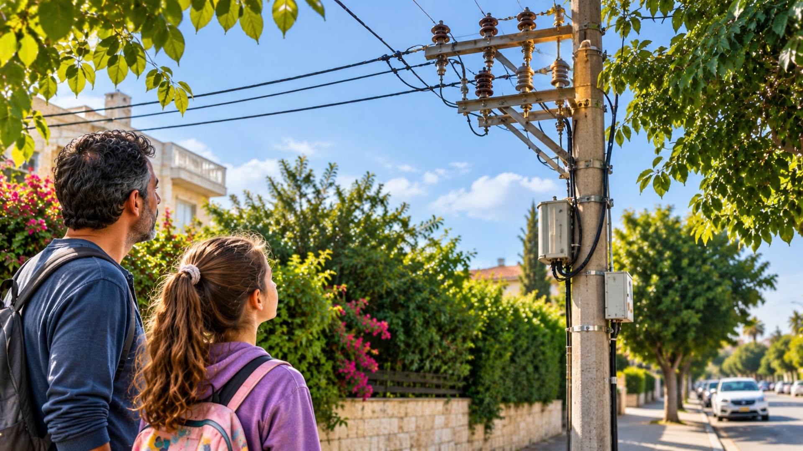

فحص الأماكن
فحص عمود كهرباء
المكوّن يبدو مختلفًا. أم أنّه الضوء فقط؟

في الطريق إلى المركز المجتمعيّ
«هل كان هذا الجزء دائمًا هكذا؟» سألت مايا حين انعكس شيء في أعلى عمود الكهرباء بزاوية غريبة. مايا البالغة عشر سنوات تمشي مع أبيها في الشارع في طريقها إلى المركز المجتمعيّ. بجانب الرصيف عمود كهرباء مرتفع، وفي أعلاه يمكن رؤية مكوّنات وكابلات من بعيد. تلاحظ مايا أنّ أحد المكوّنات يبدو مختلفًا عن الباقي، لكنّها لا تعرف إن كانت هذه حالته العاديّة.
يذكّرها أبوها ألّا تقترب من العمود أو تلمس أيّ جزء منه. يبقيان على مسافة آمنة ويبلّغان المركز المناسب وفق الإجراءات.
الوصف لا يكفي
في المكالمة مع المركز يُطلب منهما تحديد المكان وما رأياه. تصف مايا «شيئًا غريبًا في الأعلى»، لكنّها تفهم أنّ هذا وصف عامّ جدًّا. من ارتفاع الرصيف يصعب تمييز أيّ تفاصيل تظهر وما الذي تغيّر بالضبط.
تتلقّى الجهة المهنيّة البلاغ وتقرّر إن لزم فحص. مايا لا تعرف إن وُجد عطل فعلًا، وليس لديها سبب لمحاولة التحقّق بنفسها.
«هل تستطيعين قول أيّ جانب من العمود رأيت فيه ذلك؟» يسأل موظّف المركز أباها. تتوقّف مايا: من شارعها يمكن رؤية جانب واحد فقط، والأغصان تحجب جزءًا من الوصلة العلويّة. تفهم أنّ وصفًا مثل «في الأعلى» قد يناسب عدّة نقاط مختلفة.
يقدّم أبوها العنوان والتفاصيل الظاهرة من مكان آمن، من دون الاقتراب من العمود. تريد مايا المساعدة، لكنّها تتعلّم أنّ أنفع ما تستطيع فعله الآن هو شرح ما رأته حقًّا — لا البحث عن زاوية خطرة لإكمال الصورة.
لا يمكن الاقتراب
بعض المكوّنات على ارتفاع كبير وفي مكان بلا وصول عاديّ. وحتّى التصوير من قرب من مكان خطر ليس خيارًا. المختصّون المؤهّلون وحدهم مخوّلون بفحص العمود وتحديد طرق العمل.
تتساءل مايا كيف يحصل عامل صيانة على معلومات عن جزء مرتفع ومعقّد من دون تعريض نفسه للخطر ومن دون إزعاج المحيط.
ماذا ينبغي رؤيته
من زاوية نظر واحدة يمكن ملاحظة واجهة العمود؛ ومن الجانب تظهر تفاصيل أخرى. ضوء الشمس يبهر جزءًا من السطح وأحيانًا تحجب الأغصان بعضه.
تكتشف مايا أنّ السؤال ليس فقط «كيف نقترب»، بل ماذا ينبغي رؤيته لفهم حالة مكوّن: شكل، موقع، تغيّر على امتداد الزمن أو تفصيل صغير جدًّا.
المعلومات تتغيّر
في أيّام أخرى تحرّك الريح الأغصان حول العمود. صورة التُقطت في وقت واحد لا تكفي بالضرورة لإظهار إن كان الاختلاف ثابتًا أو مؤقّتًا.
تفهم مايا أنّه يلزم توثيق واضح لموعد الرصد ونقطة النظر. وإلّا يصعب مقارنة فحوصات أُجريت في أوقات مختلفة.
في طريق العودة تلاحظ مايا أنّ الضوء يأتي هذه المرّة من جانب آخر. المكوّن الذي بدا لها داكنًا صباحًا يعكس الآن ضوءًا. هل تغيّر اللون، أم أنّ الزاوية وحدها جعلته يبدو مختلفًا؟ لا تستطيع المعرفة من دون مقارنة دقيقة.
ما بدأ كملاحظة فضوليّة في الشارع صار سؤالًا لأصحاب المهنة: كيف يُوثَّق شيء مرتفع وبعيد ومخفيّ جزئيًّا، بحيث يمكن التعرّف على التفصيل نفسه في الفحص التالي؟
ما المعروف وما الناقص
من المعروف في أيّ شارع يقع العمود وأنّ تفصيلًا منه يثير سؤالًا. وغير معروف إن كان تغيّرًا غير معتاد، وأيّ مكوّن معنيّ، وما الطريق الآمن والمؤهّل لفحصه.
تريد مايا فهم ما يجعل البلاغ مساعدة حقيقيّة للمختصّين، ولماذا يجب جمع جزء من المعلومات فقط ضمن فحص مهنيّ.
قبل أن نبتكر
لا يُطلب من الأطفال فحص الكهرباء. هم يبحثون مشكلة أعمّ: كيف نحصل على صورة دقيقة لمكان مرتفع أو خطر من دون دخول منطقة بلا وصول إليها.
أيّ زاوية قد تحجب تفصيلًا؟ وكيف يُوثَّق موقع شيء صغير؟ وما الذي يجعل المعلومات مفيدة لمن هو مخوّل باتّخاذ قرار؟
تلميح من عالم الفضاء
في مهمّات الفضاء مكوّنات يصعب أو يخطر الوصول إليها، وأحيانًا تُستخدم أنظمة فحص عن بُعد لمشاهدة تفاصيل مخفيّة. فكّروا أيّ معلومات ينبغي الحصول عليها كي يكون الفحص مفيدًا لا مبهرًا فقط.
بعد القراءة — في ورقة الفريق
تحدّثوا في الفريق وأجيبوا استنادًا إلى معلومات القصّة. إذا نقصت معلومة، اكتبوا سؤالًا للمتابعة.
- من تريدون مساعدته في القصّة؟
- ماذا يحاول أن يفعل وما الذي يصعّب عليه ذلك؟
- ما الذي يحتاج إلى أن يكون قادرًا على فعله؟
- ما الذي تريدون معرفته أيضًا قبل تطوير الأفكار؟